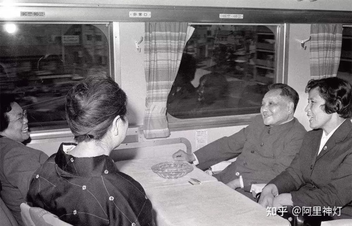
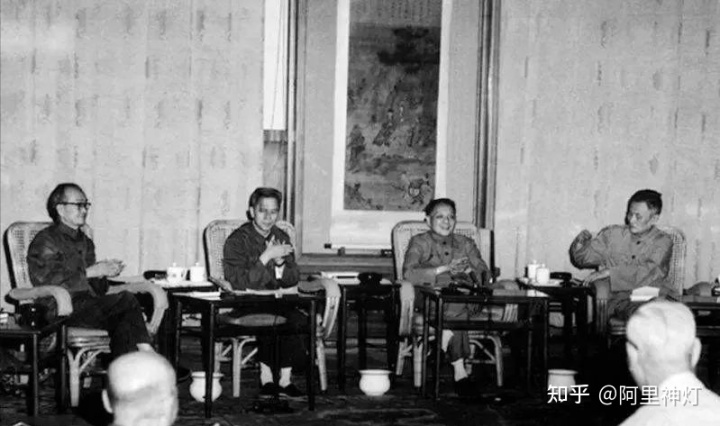
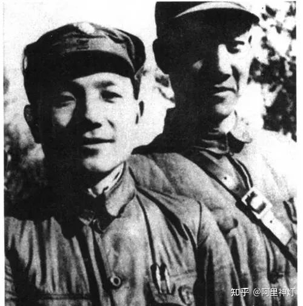
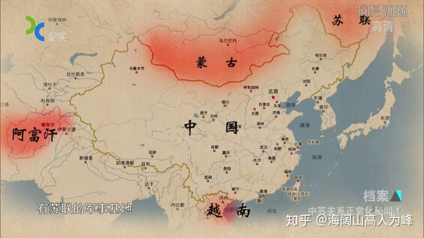
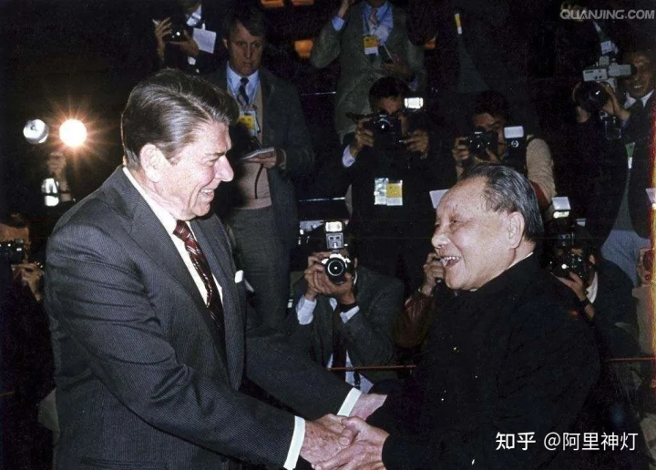
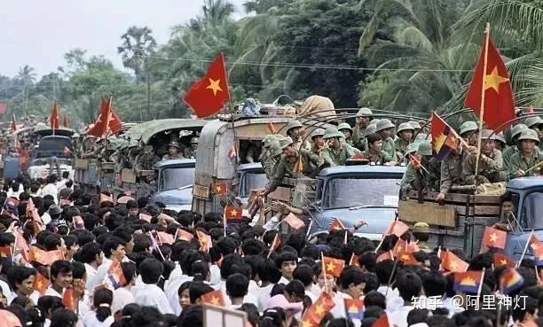

邓小平都有哪些巨大贡献？
作者：阿里神灯 - 知乎
写在前面的话
最近几年网上对邓公诋毁和谩骂很多，这是有失公允的。经济发展中公平和效率本身便是矛盾，资源匮乏时人们渴望效率，利益多了出现分配不均时人们渴望公平，这些都是正常现象。当下年轻人压力大，生活成本越来越高，首当其冲的便是房价高的离谱，致使年轻人越来越佛系低欲望，产生无力感心生怨言在所难免，然而中国经济开始腾飞伴随房价开始涨动都是在两千零几年之后，那时候邓公都已经过世多年且不再主事也已经十多年了。帮派也好，国家也罢，治理起来哪那么容易，美瑜难免有瑕！
多说一句，当下的2020年，广大青年一方面对近几年国力的猛增日渐热血沸腾激情澎湃，另一方面又对多年来房价的高企逐步灰心沮丧消沉佛系，其实这两方面起自于同一个源头，03年时以温州炒房团（十万人一千亿）为首的民间资本迅速涌入楼市，当年全国各地进入楼市的资本超过万亿！这种经年持续的势头带来了之后七八年间城市建设的高速进展，带动了水泥钢铁电力煤炭等等各行各业的大力发展，成为中国经济腾飞引擎之首。与之伴随发生的是逐年的城市化进程的加快和地方财政支出的加大，各地都将土地出让作为财政最大来源，房价也随之上涨，这些因因果果只言片语难以论述。
再多说一句，人们其实基本上都能做到享其利承其弊的，然而这里面又有已享其利未承其弊以及未享其利反承其弊的情况，这主要是先上车后上车的时代发展的原因，也是为政者需要考虑解决的问题所在。当然这些都不是本文要讨论的重点，笔者也没有能力和眼界阐述如此宏大的命题，就此打住。咱还是来看邓公的故事吧，以下是原文
序、一位平凡的伟人
邓小平同志爱打扑克牌，即使在战争年代也是有空就打，可以说，解放战争时期的中野司令部里无一人是他的对手。全国解放以后，小平同志在重庆又学会了打桥牌，从此成了他的终生爱好。1986年，他在会见日本政治家二阶堂进时还自我调侃说：“我测验自己的身体靠两条。一条是能不能下海，一条是能不能打桥牌。能打桥牌证明头脑还好，能下海证明体力还好。”
此外，小平同志还爱打麻将，因为麻将和桥牌一样，也是一种运筹帷幄的博弈游戏。跟他打桥牌、打麻将的对象很杂，有以前革命的战友老同志，有身边的工作人员，还有聂卫平，“桥牌皇后”杨小燕这样的高手。
当战争年代结束后，他就以这些娱乐活动来保持自己思维的敏锐。
小平同志也是一个热爱生活的人，他爱做菜，做的回锅肉深得川菜精髓，此外，他出品的粉蒸肉和扣肉也深得人心，他爱看《资治通鉴》，但也爱看金庸写的武侠小说。他还是个铁杆球迷，有时候，他拿着一份《体育报》也能看得津津有味。
他写的文章质朴平实，直奔主题，常常都是满篇大白话，连成语都很少，毛主席曾经评价说，看邓小平写的文章如同“吃冰糖葫芦”。
但从他的文中我们却能看到最简单也是最实用的道理：
“改革开放胆子要大一些，敢于试验，不能像小脚女人一样。看准了的，就大胆地试，大胆地闯。”
总的来说，正是因为他身上有许多普通人的平凡特点，才能成就其伟大。
一、他为中国争回了20年
1977年7月，邓小平同志正式恢复工作，这一年他已经73岁了。
在当时73岁实实在在地算是高龄，时任苏联领导人勃列日涅夫比小平同志还小2岁，可是在他领导下的苏联已经老态龙钟，种种积弊开始爆发。
然而邓小平的脑海里却始终思考着一个复杂、深远的问题：建国已经28年了，怎样让新中国焕发新的活力？
从国内层面来说，国家的动荡和混乱局面刚刚结束，但科学教育事业以及工农业的正常生产尚未全部恢复，百废待兴。更重要的是人民的生活水平亟待提高，新中国已经成立28年了，老百姓的腰杆子是挺起来了，但还有很多地方的很多人生活在贫困之中。
制约国家集中精力搞建设的，除了国内的现实问题，还有并不乐观的国际大环境。将近20年来，新中国始终都在防备着超级大国对自己可能发动的入侵，数百万军队长期处于战备状态，牵制和消耗了国家的大量资源。
实现国家的统一、繁荣和富强，始终是当年他和毛主席、周总理、朱总司令等老一辈无产阶级革命家为之浴血奋斗的目的。
经济事业
在江西农村过了好几年，他知道现在老百姓的想法很简单，他们想的就是过好日子，好日子是什么？能有洋芋、猪肉吃就不错了。所以他平淡却又坚定地说：“贫穷不是社会主义”。
1978年10月，他访问了日本、泰国、马来西亚、新加坡等国，深切地感受到周边国家振兴经济给人民生活带来的巨大变化。
在日本，他特地乘坐了世界著名的铁路新干线，深有感触地说：“坐这火车的感觉就是快，有催人跑的意思！”
他又参观了日本现代化的日产汽车、君津制铁所、松下公司和日本造币局。日本的现代化大工业生产令他深受触动。
邓小平乘坐日本的新干线
他依然记得，一年前东北冶金工业部副部长叶志强考察日本归来时向他汇报的情况：“服务员送来易拉罐啤酒和饮料，我们没见过，不会用，鬼知道日本人竟能把钢材轧制得像纸一样薄，还印上了彩色图案，日本人用手指一拉就开了，所以叫易拉罐。”
而我们国家当时还只能生产热轧钢板，既厚又重，还容易生锈，涂漆以后光洁度也不好。
在1960年代初期，中日两国的年钢产量相差无几，而15年后他们的钢产量已经增长了400%，而我们的钢产量只增长了75%。
邓小平听出了叶志强话中的羡慕、感慨、无奈，还有一点点辛酸。
这一次，他对陪同参观的新日本制铁所董事长稻山嘉宽说：“能不能帮中国也建造一所比君津（钢铁厂）还好的钢铁厂？”
在松下电器公司，他又对陪同的社长松下幸之助说：“松下先生，你能否为中国的现代化建设帮点忙？”
对于性格要强好胜的邓小平来说，这些听起来像是求人的话并没有什么丢脸的，因为我们落后了啊！
近代以来的历史经验表明，中国一定要追赶上世界的脚步，并且走在世界前列！这是国家、民族自立于国际社会的必要前提。
邓小平下定决心，尽管自己的时间已所剩不多，但也要竭尽全力，为中国争回失去的宝贵时间。
要想发展现代工业，第一个就需要发展现代炼钢业。
1977年立项、1978年正式动工的宝山钢铁厂初步估算投资达300亿元人民币，而当时中国政府一年的财政收入才800亿人民币，相当于全国人民每人掏30元钱建宝钢，这样的财政压力无疑是非常巨大的。
邓小平坚定地对上海的负责同志说：“要搞就搞个大的，花点钱，买些现代化的设备回来。”
他又说：“历史将会证明，建设宝钢的决定是正确的。”
1978年12月，宝钢项目正式启动，除了引进了新日铁的全套技术以及设备以外，日本方面还提供的技术人员和对中方的完整技术培训。
宝钢项目的建设整整持续了11年多，直到1990年才全部完成，如今，宝钢和武汉钢铁集团合并后的宝武钢铁集团年产量达6500万吨，排名世界第二，比第三名的新日铁整整多了1800万吨。
1987年9月，北京松下彩色显像管有限公司在酒仙桥成立，这是当时规模最大的中日合资企业。
随后北京松下的业务在中国大获成功，中国市场的规模和活力让日本商界大为震动，并掀起了新的投资中国的热潮。
科教事业
要发展经济，全靠国外的技术和专家是不行的，关键还是得有我们自己的人才、设备和技术。
1977年8月，邓小平主持全国科学和教育工作座谈会，就振兴教育和科技事业问计于苏步青、吴文俊、童第周、王大珩等著名科学家和知识分子。
来自武汉大学的老教授查全性看到邓小平谦虚地听取大家的发言，认真地做着笔记并不时发言肯定，心中十分感动，他激动地站起来，慷慨陈词说：
“振兴教育，改革招生制度一定要当机立断，只争朝夕，今年能办的就不要拖到明年去办。”
听完他的话之后邓小平当场拍板，把原定1978年恢复举行的高等学校招生全国统一考试提前到1977年举行，并且让时任教育部长刘西尧立了“军令状”。
他说：“既然今年还有时间，那就坚决改嘛！把原来写的招生报告收回来，根据大家的意见重写。”
在经久不息的掌声中，许多人情不自禁地热泪盈眶。
1977年11月，中断了10年的高考全面恢复，时至今日，它仍然是我国公认的最公平、最科学的选拔人才的方式。
邓小平在全国科学和教育工作会议上
解放思想
1978年12月13日，邓小平在中共中央工作会议上做了题为《解放思想，实事求是，团结一致向前看》的报告。在报告的最后他号召全党同志：为改变我国的落后面貌，把我国建成现代化的社会主义强国而奋勇前进！
实事求是，是小平同志毕生坚持的真理。
12月18日，党的十一届三中全会召开，12月23日晚上，中国千家万户的收音机里响起了这样一句话：“把全党工作的着重点和全国人民的注意力转移到社会主义现代化建设上来”！
随着这句话，一个新的激情澎湃的年代拉开了帷幕。
就在这个月，安徽省凤阳县小岗村的18户农民，在村长严宏昌的带领下签了一份“分田到户”的契约，决定不吃“大锅饭”，不再向国家要钱要粮。
第二年，安徽遭遇大旱，但小岗村的粮食产量却比前一年增长了4倍，农民的收入增长了16倍！“包产到组、包产到户、联产承包”的浪潮很快席卷全国各地。
从1979年开始，乡镇企业在江苏、浙江、福建、广东等地如雨后春笋一般涌现，这其中就有浙江萧山人鲁冠球任厂长的农机厂。
多年以后，已经成为万向集团董事局主席的鲁冠球回忆当时的情形说：“当时都是集体企业，个体的企业很少，个体企业你想办得大一点，不允许……”
从1969年起，鲁冠球办厂已有10年，但始终属于“灰色企业”受到排挤，工厂搬来搬去，连续换了6个地方，这一次鲁冠球长出了一口气：他的企业终于可以堂堂正正地在萧山县里立足了。
1987年，中国乡镇企业的产值第一次超过了农业的产值，标志着农村经济结构发生了历史性的变化，数以亿计的中国农民的水平同样发生了翻天覆地的变化。
1979年4月，邓小平在中央工作会议上听取了广东省委领导同志关于“在深圳、珠海、汕头等地建立出口加工区”的报告后说：
“可以划出一块地方，就叫做特区，陕甘宁就是特区嘛，中央没有钱，可以给一些政策，你们自己去搞，杀出一条血路来。”
对于“杀出一条血路”邓小平深有体会，1929年百色起义后，面对国民党军队大举反扑的不利局面，他和张云逸、李明瑞等人率红七军、红八军远征七千里，杀出一条血路，于1931年7月抵达中央苏区。
1934年，他亲身经历了中央红军在毛主席、周总理等带领下，在长征中杀出一条血路抵达陕北，为中国革命保存了珍贵的火种。
抗战时期的邓小平
1947年8月，晋冀鲁豫野战军在他和刘伯承司令员带领下，从国民党几十万大军的围追堵截中杀出一条血路挺进大别山，拉开了解放战争战略反攻的序幕。
仅仅一年以后，刘邓大军又猛虎下山，枪出如龙挑翻了当时国民党中央军最精锐的黄维第12兵团，自此得中原者得天下，淮海一战定江山。
干革命也好，搞建设也好，本来就是从没有路的地方闯出一条路来，所以，必须要有“杀出一条血路”的勇气和魄力！
1979年7月20日，深圳特区的建设启动，1980年8月，深圳特区正式成立，随后珠海、汕头、厦门三个经济特区也相继成立。
改革开放的过程绝非一帆风顺，在十余年时间中，有许多人对开放的方式、前景提出质疑，乃至有人建议停止开放。
1992年南巡之后，邓小平再一次坚决地说：“不改革开放，不发展经济，不改善人民生活，只能是死路一条。”
他就是改革开放最重要的那个中流砥柱，他相信“实践是检验真理的唯一标准”，改革是否要坚持下去，要看它是否有利于最大多数人民群众的切身利益。
从“深圳速度”到“中国速度”，新中国用30年的时间走过了西方资本主义国家三百年的历史道路，一个全新的社会主义现代化大国基本成型。
二、运筹帷幄，民生为本
里根和撒切尔夫人
差不多与小平同志恢复工作的同时，世界上另两个资本主义国家的政局也发生了巨大变化。
1979年5月，玛格丽特·撒切尔成为英国第49任首相，她开始执政以后，面对当时英国陷入经济危机，国家财政濒于破产的严峻局面，大刀阔斧地开展了一系列以加强私有化为导向的改革。
她推动新一轮国企私有化，控制货币发行，限制工会权利，削减工人的福利开支，希望以提升人们的工作动力来刺激国家的经济活力，这一系列政策虽然引起了普通民众的不满，但的的确确帮助英国暂时走出了困境。
1982年6月，撒切尔夫人带领英国赢得了对阿根廷的马岛战争，使得英国自二战以后的的国际地位空前提升，由于她在对苏政策上展示的一系列强硬姿态，她又被外界戏称为“铁娘子”。
1981年1月，罗纳德·里根就任美国第40任总统，为了破解美国经济增速放缓，通胀率猛增的困局，他采取了一系列被后人称为“里根经济学”的改革措施。
里根执政初期，美国政府大幅削减了社会福利开支以减少财政赤字，同时降低个人和企业所得税，控制货币发行，减少对工资和物价的干预，其主要思路和撒切尔政府类似，都是采用西方经济学中“供应学派”的理论刺激经济，创造就业。
“里根经济学”使得80年代后期美国经济开始了阶段性的繁荣，并形成了对前苏联的战略优势。
同时，里根通过“星球大战”计划，支持阿富汗游击队等一系列“趁你病、要你命”的攻势政策严重干扰了苏联的战略布局，为美国在冷战中最终获胜奠定了基础。
如里根和撒切尔夫人这样高明有手腕的政治家，在世界历史上也是不多见的，可能一百年里也就出一个两个。
维护国家主权
当时国际形式极为复杂，苏联仍然一如既往的咄咄逼人，为了压迫中国重新屈服于苏联，勃列日涅夫策动越南在南部边境挑衅中国，越南开始出兵入侵亲中的柬埔寨和老挝，想要先解决后顾之忧然后与苏联南北夹击中国，同时苏联在东北中苏边境，中蒙边境陈列大军施压，等于是在多个方向同时向中国施压。
苏联四面施压中国
为了打开中国的国际局面，减轻战略压力，邓小平首先选择了加强和美国的关系。就在美国方面以为中国有求于自己，打算在对台关系方面漫天要价时，中国方面的态度却冷了下来。
邓小平对来华谈判建交问题的美国国务卿万斯说：“台湾的问题，我们中国人是有能力解决的，奉劝美国朋友不必为此替我们担忧。”
这让美国方面顿时失去了最大的筹码，随着苏联加快部署核武器，时任美国总统卡特开始意识到，在国际事务中美国同样需要中国的合作。
其实，对于中美建交邓小平有着清晰的考虑和部署，但这一切只能建立在美国尊重中国的主权和统一的前提下。
1978年12月，美国方面几乎是赶着和中国代表签订了建交公报，随后小平同志访美，中国发动对越自卫反击战，苏联出兵阿富汗，一系列重大国际事件似乎是像事先安排好的戏码那样紧凑地发生。
邓小平会见里根
围绕着对越自卫反击战这一问题，邓小平敏锐地抓住了苏联、美国在外交层面各有所困，各有所求的时间节点，以迅雷不及掩耳之势出兵越南，平定南疆。
1984年4月26日，美国总统里根访华，就在访华的第3天，外交事务助理告诉他一个突发的消息：中国在边境地区对越南发动了局部攻势！
这一仗，既是打给里根和苏联看的，也是打给撒切尔夫人看的。随着解放军以迅雷不及掩耳之势夺回两山地区，陷入僵局的中英香港问题谈判很快取得突破性进展。
1984年12月19日，中英两国政府发表《关于香港问题的联合声明》，明确1997年7月1日中国将恢复对香港行使主权。
对越自卫反击战和两山轮战彻底粉碎了越南建立“印度支那联邦”的野心，缓解了来自中国南方的战略压力。
和平是时代主题
就在两山轮战的第二年，邓小平拍板决定实施百万大裁军。
1984年11月，他敏锐地指出：“讲战争危险，从毛主席那个时候讲起，讲了好多年了……现在我们应该冷静地作出新的判断……没有这个判断，成天诚惶诚恐的，怎么能够安心地搞建设？”
外交谈判也好、军事斗争也好，这一切布局，最终都是为了让国家把更多的力量集中到经济建设、改善人民生活和实现统一上来。
随着国际形势的急剧变化，1980年代后期邓小平指导中国迅速调整外交策略，他要用自己最后一点时间和精力，为中国营造更有利于发展的外部环境。
1988年12月19日，印度总理拉吉夫·甘地访华，这是34年来印度领导人首次访问中国。在会见时邓小平对拉·甘地语重心长地说：
“中印两国共同倡导的和平共处五项原则是最经得住考验的。我们应当用和平共处五项原则作为指导国际关系的准则。”
随后中印两国发表了《联合公报》，这标志着因边境争端而长期紧张的两国关系实现显著缓和。
1989年5月15日，苏联领导人戈尔巴乔夫访华，5月16日，邓小平在会晤中告诉戈尔巴乔夫：“我们这次会见的目的是八个字：结束过去，开辟未来。”同日，中苏关系恢复正常化。
随着冷战走向尾声，邓小平不失时机地通过老挝领导人给越南领导人带话，敦促越南方面停止侵略柬埔寨，实现中越关系正常化。
已经被两山轮战拖得山穷水尽的越南政府得到消息后迅速从柬埔寨撤军，1991年11月，中越两国关系实现正常化。
越南军队撤出柬埔寨
在邓小平的亲自过问下，1992年8月24日，中国与韩国正式建立外交关系。至此，由冷战导致的中国周边的对立与紧张关系要么排除，要么缓解。
从1977年到1992年，邓小平用整整15年时间为新中国创造了一个有利于发展和统一的良好国际环境。
在他所下的这盘大棋上，卡特、里根、勃列日涅夫、戈尔巴乔夫、撒切尔夫人、黎笋、拉·甘地……这些曾经叱咤风云的政治人物，既是对手，也是棋子。
毫无疑问，那些擅长搞议会政治的西方领导人与23岁开始干革命，和日本帝国主义、国民党反动派打了22年仗，从尸山血海里走出来的邓小平相比，至少在胆色和魄力上不是一个等级的。
小平同志安排他们加入棋局的目的，是为了中国的国家利益服务。
这时的中国面对世界时远比1977年的中国更有底气。1989年以后，针对一些西方敌对势力“制裁”中国的叫嚣，邓小平在会见泰国总理差猜·春哈旺时说：“世界上最不怕孤立、最不怕封锁、最不怕制裁的就是中国。”
此时，里根已于1989年1月卸任美国总统，撒切尔夫人也于1990年11月因为失败的税收政策而黯然下台，他们所推行的经济和社会政策很快遭到对立政党领导人的改弦更张，以致人亡政息。
唯有邓小平所大力推行的改革开放，在他退休之后，乃至于他逝世之后20多年，依然焕发着蓬勃生机。
这是因为，美国和英国的改革说得再天花乱坠，也只能代表一部分人的利益，既然只代表一部分人，那就必定和另一部分人的利益冲突。（按：也与西方“否决政治”的特点有关）
而小平同志推动的改革开放让绝大部分中国人都成了改革的参与者、受益者，所以人民群众愿意支持改革。
1992年最后一次南巡时，他提出了自己对祖国和人民的殷切期望：要发达起来，是时候了！
近代以来中国的历史实践证明，所谓改革，最难改变的是人的观念，毛主席为首的新中国第一代领导集体通过半个世纪的努力，建立了“人民当家作主”的观念。
而邓小平和新中国第二代领导集体，则通过约二十年的努力，建立了“解放思想、实事求是”的观念，建立了社会主义市场经济体制。
三、结语
七十多年前，邓小平和刘帅一起带领近四十万大军，从祖国的黄海之滨一直打到喜马拉雅山下、雅鲁藏布江边，为人民的解放事业立下了赫赫战功。
四十多年前，邓小平带领十亿中国人民用勤劳智慧再一次改变了自己的命运，使这个古老的国家焕发了新的生机。
生活中的邓小平，是个爱吃大肥肉，爱打桥牌和麻将，爱看武侠小说和《体育报》的平凡人。
但这不影响人民在几十年后，乃至未来继续纪念他、赞扬他对新中国作出的伟大贡献。